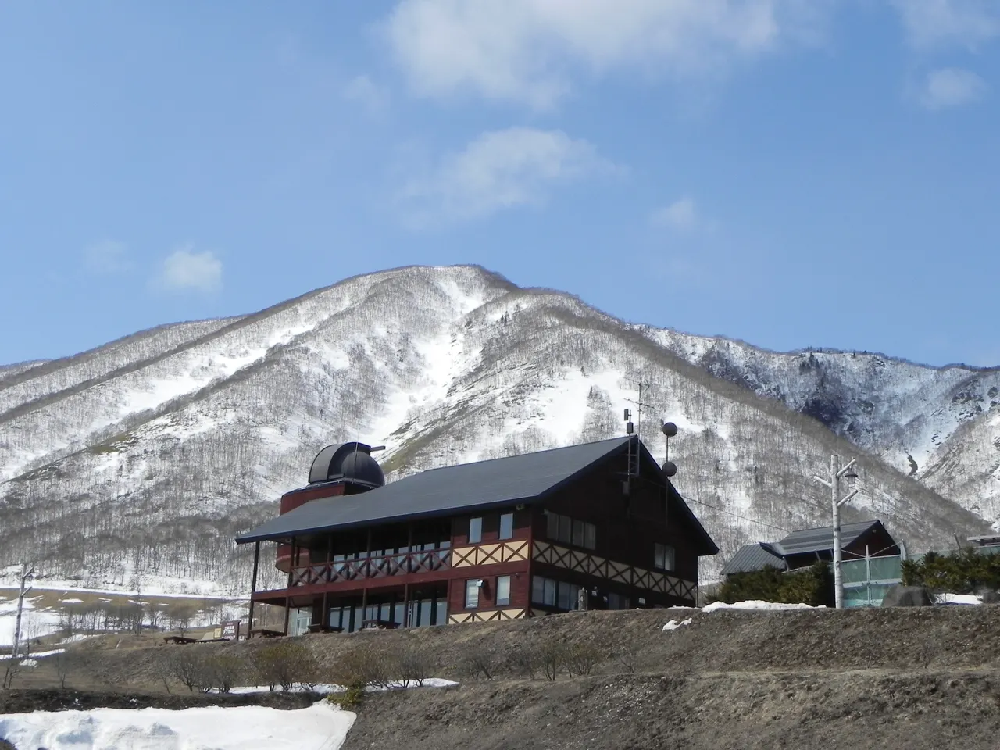
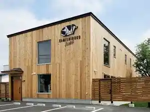
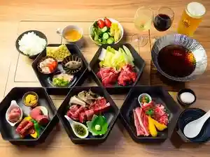
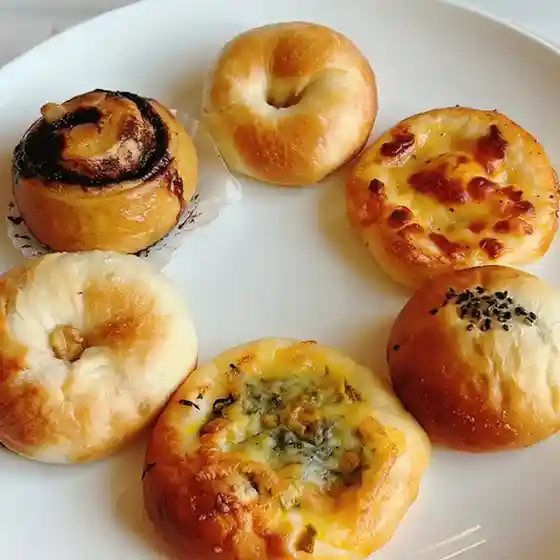
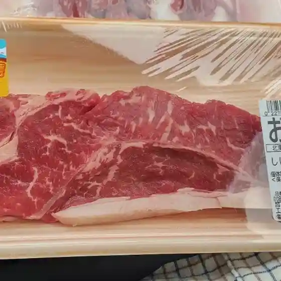
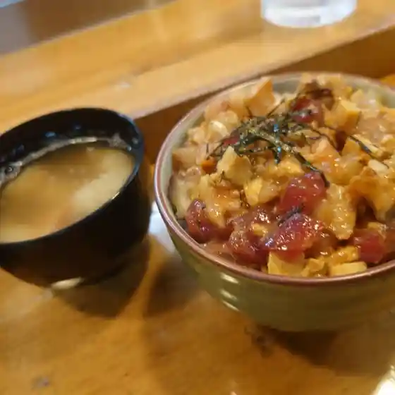
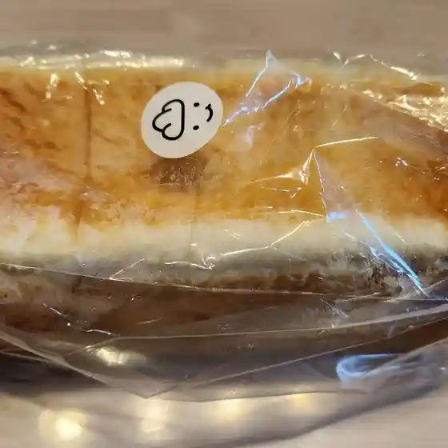
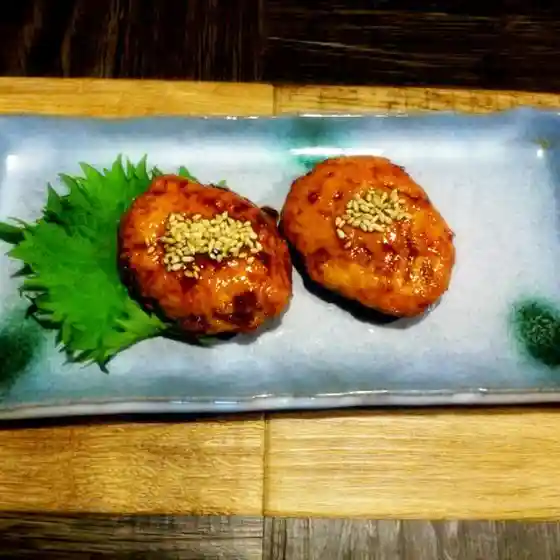
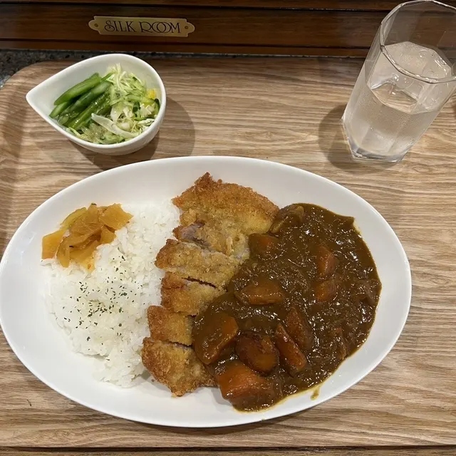
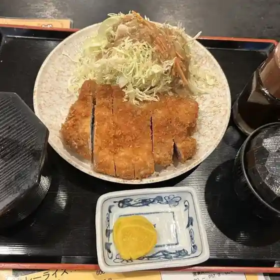

Shihoro
Shihoro · Hokkaido
Shihoro
Highlighted on the Hokkaido map.

Stay
カミシホロホテル

Kamishihorohoteru
ペンション and オーベルジュ：旅とPizzaとお宿 咲色

Penshon And Ooberuju : Tabi To Pizza Too Yado Saki Iro
しほろ温泉「プラザ緑風」

Shihoro Onsen ( Puraza Ryokufuu )
Dining
Bakestand nemu

Bakestand Nemu
ASPO

Aspo
寿し大洋

Hisashi Shi Taiyou
トカトカ 士幌ASPO店

Tokatoka Shihoro Aspo Mise
士幌旅館

Shihoro Ryokan
居酒屋じゅんぺい 士幌店

Izakaya Junpei Shihoro Mise
珈琲茶館 ふきのとう

Koohii Sakan Fukinotou
お食事処 祥

O Shokuji Tokoro Shou
ロッジ ヌプカ
Rojji Nupuka
カフェ ひよっこ
Kafe Hiyokko
カントリーロード
Kantoriiroodo
Seicemart 士幌店
Seicemart Shihoro Mise
カフェ カンイチ
Kafe Kan'Ichi
じろう食堂
Jirou Shokudou
はなお
Hanao
鳥しん
Tori Shin
カフェ まるく
Kafe Maruku
M.kitchen
M . Kitchen
粉もん ひょうたん山
Kona Mon Hyoutan Yama
いちい
Ichii
しほろ温泉プラザ緑風
Shihoro Onsen Puraza Ryokufuu
食工房パレット
Shoku Koubou Paretto
カフェ ブーオ
Kafe Buuo
みんなのもりのくまさん
Minnanomorinokumasan